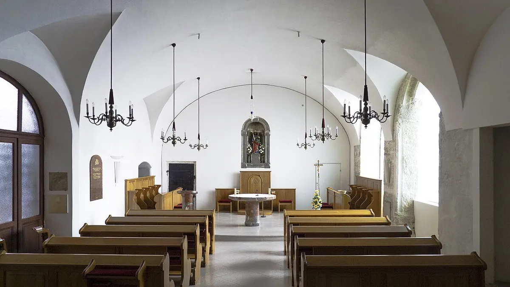
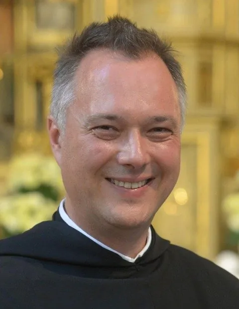

Seit 1256
Die Augustiner
Der heilige Augustinus, seine Regel und der Orden, der seinen Namen trägt, von den Anfängen bis nach Wien.
Aurelius Augustinus
Aurelius Augustinus wurde am 13. November 354 in Thagaste (dem heutigen Souk Ahras in Algerien) geboren. Nach einem bewegten Leben — geprägt von intellektueller Suche und tiefer Bekehrung — wurde er zum bedeutendsten Kirchenlehrer des Abendlandes.
Seine Confessiones gelten als das erste Werk der europäischen Literatur, das die Innerlichkeit eines Menschen in dieser Tiefe erforscht. Sein Denken prägte Theologie, Philosophie und das gesamte westliche Geistesleben bis heute.
Am 28. August 430 starb Augustinus als Bischof von Hippo Regius. Sein Erbe lebt weiter im Orden, der seinen Namen trägt, und in seinem bis heute viel zitierten Wort: „Unruhig ist unser Herz, bis es Ruhe findet in dir."
Augustinus wurde am 13. November 354 in Thagaste geboren, als Sohn des Patricius und der Christin Monika. In Karthago studierte er Rhetorik; dort kam 372 sein Sohn Adeodatus zur Welt. Ciceros Schrift „Hortensius“ weckte seine Liebe zur Philosophie, zugleich schloss er sich für rund zehn Jahre den Manichäern an.
Nach Lehrjahren in Thagaste, Karthago und Rom wurde er 384 kaiserlicher Professor für Rhetorik in Mailand, wo ihn die Predigten des Bischofs Ambrosius beeindruckten. Im August 386 kam es im Garten zur Bekehrung, als er die Worte „Tolle lege, nimm und lies“ hörte; in der Osternacht 387 taufte ihn Ambrosius gemeinsam mit seinem Sohn. Kurz darauf starb Monika in Ostia.
388 gründete Augustinus in Thagaste eine Gemeinschaft von Laienmönchen. In Hippo Regius wurde er 391 zum Priester und 395 zum Bischof geweiht; auch als Bischof lebte er mit seinen Klerikern in Gemeinschaft, nach dem Vorbild der Urgemeinde, die „ein Herz und eine Seele“ war. Er schrieb unter anderem die „Confessiones“, „De trinitate“ und „De civitate Dei“ und stritt gegen Manichäer, Donatisten und Pelagianer. Er starb am 28. August 430 im von den Vandalen belagerten Hippo; seine Gebeine ruhen seit dem 8. Jahrhundert in Pavia.
Die älteste Lebensbeschreibung verfasste zwischen 431 und 437 sein Freund Possidius, Bischof von Calama, der beim Tod Augustins an seiner Seite war.
Zeittafel
„Du hast uns auf dich hin geschaffen, und unruhig ist unser Herz, bis es ruht in dir.“Augustinus, Bekenntnisse I,1,1
Die Augustinusregel
Die älteste Klosterregel des Westens ist mehr als 1600 Jahre alt und prägt bis heute Hunderte von Gemeinschaften.
Entstehung
Augustinus schrieb seine Regel um 397, rund zehn Jahre nach seiner Taufe durch Ambrosius in Mailand. Vorangegangen waren drei Stationen gemeinsamen Lebens: 388 die erste Gemeinschaft in Thagaste, 391 ein Kloster für Laien in Hippo und um 395/396 ein Klerikerkloster im Bischofshaus von Hippo. Die Regel stammt damit aus der Frühzeit des Ordenswesens, etwa hundert Jahre vor der Regel Benedikts.
Die überlieferten Fassungen
Der Text liegt in mehreren Fassungen vor, die der Augustiner P. Lukas Verheijen 1967 benannte:
- Praeceptum: das Kernstück, geschrieben für Männer. Es entstand vermutlich um 397 für die erste Gemeinschaft in Hippo, Brüder ohne seelsorglichen Auftrag.
- Ordo monasterii: ein kürzerer Text mit Weisungen für den äußeren Ablauf des Klosteralltags. Er regelt Gebetszeiten, Arbeit, Gehorsam, Tischlesung, Schweigen und den Umgang mit Verstößen und steht oft vor dem Praeceptum.
- Regularis informatio: die Fassung für Frauengemeinschaften, erstmals im 13. Jahrhundert belegt, gemeinsam mit einem Brief an Klosterfrauen.
Die heute geltende Form, die Regula recepta, besteht aus dem ersten Satz des Ordo monasterii, der die Liebe zu Gott und zum Nächsten als Hauptgebote nennt, dem übrigen Ordo und dem Praeceptum. Für Frauenorden ist sie entsprechend angepasst.
Für Männer oder für Frauen?
Schon im 12. Jahrhundert wurde vereinzelt vermutet, die Regel sei ursprünglich für Frauen geschrieben worden. Dafür spricht, dass Augustinus’ verwitwete Schwester nach dem Bericht seines Biographen Possidius ein Frauenkloster leitete, und Erasmus von Rotterdam deutete die letzten Kapitel als Hinweis auf eine Frauenregel. Die neuere Forschung sieht das überwiegend anders: Die Bilder von Schönheit, Duft und Spiegel sind Anspielungen auf die Heilige Schrift, die Handschriften der Männerregel sind rund sechs Jahrhunderte älter als die der Frauenfassung, und der zugehörige Brief weicht in Stil und Aufbau von Augustinus ab. Verheijen hielt es für möglich, dass Augustinus selbst den Brief für das Frauenkloster in Hippo verfasste und die Regel dort angepasst wurde.
Verbreitung bis heute
Ab dem 11. Jahrhundert verbreitete sich die Regel stark. Als alleinige Lebensregel einer Gemeinschaft taucht sie erstmals 1067 in der Kirchenprovinz Reims bei den Kanonikern auf, etwa fünfzig Jahre später war sie die allgemeine Norm der Regularkanoniker. Weitere Gemeinschaften übernahmen sie, darunter:
Insgesamt leben mehrere hundert Orden und Kongregationen nach dieser Regel. Einige sind untergegangen, die Zahl ist aber noch immer groß; eine vollständige Übersicht gibt es nicht.
Inhalt und Geist der Regel
Der Augustiner Adolar Zumkeller beschreibt die Regel als knappes Programm klösterlichen Lebens, in dem Augustinus’ Wesen erkennbar wird: Gottesliebe, Nächstenliebe, Armut, Demut, Dienstbereitschaft, Geduld und Güte.
Gott und den Nächsten zu lieben sind für Augustinus die Hauptgebote, nach denen sich das Kloster ausrichtet. Erstes Ziel des gemeinsamen Lebens ist die Eintracht in einem Herzen und einer Seele auf Gott hin, nach dem Vorbild der Lebens- und Gütergemeinschaft der ersten Christen. Dazu gehören Gebet, geistliche Lesung, Maßhalten, Nachsicht und Vergebung. Die acht Kapitel der Regel setzen diese Schwerpunkte:
1. Ziel und Grundlage des gemeinsamen Lebens. Die Gemeinschaft, die in Gott gegründet ist, bildet für Augustinus den Kern des klösterlichen Lebens. Im Mitbruder begegnet man einem Tempel Gottes und begegnet ihm mit Ehrfurcht. Besitz, Nahrung, Kleidung und Wohnung werden geteilt, wie es die Apostelgeschichte von der ersten Gemeinde in Jerusalem erzählt (Apg 4,32.35).
2. Das Gebet. Das Herz soll mit dem übereinstimmen, was der Mund im Gebet spricht. Augustinus kennt die Zerstreuung beim Beten und sieht sie als Prüfung, an der man innerlich wächst. Arbeit, die dem Gebet und der Lesung die Zeit nimmt, lehnt er ausdrücklich ab.
3. Einfache Lebensführung. Essen, Fasten, Kleidung und Schlafstätte richten sich nach Gesundheit und Belastbarkeit des Einzelnen, nicht nach einer starren Ordnung. Augustinus will Strenge eher mildern als verschärfen und wendet sich gegen Ungleichheit zwischen Reichen und Armen: Jeder soll bekommen, was er braucht. Askese dient dazu, die innere Ordnung wiederzufinden. Die Lesung bei Tisch gilt ihm als geistliche Nahrung und steht auf einer Stufe mit dem Gebet.
4. Keuschheit und brüderliche Zurechtweisung. Die Regel verlangt ein unauffälliges, von der Haltung statt von der Kleidung geprägtes Auftreten. Keuschheit versteht der Orden als Gnadengeschenk, das das Herz für die Liebe zu Gott und den Dienst an Christus und seiner Kirche öffnet. Weil Versuchungen bleiben, sollen die Brüder einander helfen und aufeinander achten.
5. Die zeitlichen Bedürfnisse. Kleidung, Schuhe, Bücher, Essen, Gesundheit und Krankenpflege werden unter den Brüdern verteilt, und niemandem darf das Notwendige vorenthalten werden. Dieses Kapitel ist das konkreteste und enthält viele zeitgebundene Vorschriften, die man heute nicht mehr wörtlich anwenden kann. Gemeinschaftssinn steht über privaten Interessen.
6. Abbitte und Verzeihung. Konflikte gehören zum Zusammenleben, entscheidend ist, wie man danach weitermacht. Wer verletzt hat, soll den Schaden rasch wiedergutmachen, und wer verletzt wurde, soll ohne langes Aufrechnen verzeihen.
7. Befehlen und Gehorchen. Die Grundlage des Klosterlebens ist nicht der Gehorsam, sondern die Liebe. Die Gemeinschaft versteht sich als geistige Familie, der Obere als geistlicher Vater, der sein Amt als Dienst in Liebe versieht und vor Gott Verantwortung trägt. Gehorsam findet seine Grenze dort, wo ein Befehl gegen Gottes Gebote verstößt. Die Brüder sollen Mitgefühl mit dem Oberen haben, denn mit der Stellung wächst die Gefahr.
8. Die Beobachtung der Regel. Das Wachsen in der Liebe zu Gott und zum Nächsten ist das Grundanliegen. Die Regel soll aus Liebe gehalten werden, nicht aus Zwang, sondern „als Freie unter der Gnade“. Der Anspruch ist hoch und richtet sich nicht nur an Ordensleute: Die Regel lädt dazu ein, das eigene Leben immer wieder zu überdenken und gegebenenfalls zu ändern.
„Der erste Zweck eures Zusammenlebens ist, dass ihr einmütig im Haus wohnt und ein Herz und eine Seele seid, auf Gott hin.“Augustinus, Regel 1,2
Spiritualität
Augustinische Spiritualität verbindet das gemeinsame Leben mit der persönlichen Suche nach Wahrheit.
Ein Herz und eine Seele
Der Kern ist die Gemeinschaft. Augustinus wollte nach seiner Bekehrung mit Freunden Gott suchen, so wie die erste Gemeinde in Jerusalem lebte: in Eintracht und mit gemeinsamem Besitz. Aus diesem Vorsatz wurde die Regel, und der Satz „ein Herz und eine Seele auf Gott hin“ wurde zum Leitwort des Ordens.
Die Suche nach Gott
Augustinus fragt nach Gott und nach der Seele, nach sonst nichts. Das gilt für sein Gebet aus den „Soliloquia“ ebenso wie für die „Confessiones“, in denen er sein Leben vor Gott ausbreitet. Gott wird dort nicht in der Ferne gesucht, sondern im eigenen Inneren: „Unruhig ist unser Herz, bis es ruht in dir.“
Gnade und Liebe
Die Theologen des Ordens haben diese Linie weitergeführt. Sie stellen die Liebe (caritas) als Ziel allen Denkens in den Mittelpunkt und betonen den Vorrang der Gnade: Auch die Verdienste des Menschen sind Geschenk Gottes. Aus dieser Haltung wuchsen Stadtseelsorge, Predigt und Wissenschaft des Ordens.
Gebet, Lesung und Dienst
Gebet und geistliche Lesung haben im Alltag Vorrang vor Überarbeitung, Askese soll die innere Ordnung wiederherstellen und nicht verbissen sein, Ämter sind Dienst. Das Leitbild des Vikariats Wien fasst es heute so: verbindliche Lebensgemeinschaft nach Regel und Konstitutionen, getragen von Liturgie und lebenslanger Bildung.


Inhalt und Geist der RegelDas Leitbild des Vikariats
„Spät habe ich dich geliebt, du Schönheit, so alt und so neu.“Augustinus, Bekenntnisse X,27,38
Augustinus-Forschung
Das Werk des Kirchenvaters ist bis heute nicht vollständig erschlossen, und der Orden trägt wesentlich zu seiner Erforschung bei.
Ein Werk, das nie fertig gelesen ist
Von Augustinus sind über hundert Werke sowie zahlreiche Briefe und Predigten erhalten. Davon liegt nicht einmal die Hälfte in deutschen Druckausgaben vor. Die Literatur über ihn umfasst schätzungsweise 50.000 Titel weltweit, jedes Jahr kommen rund 300 dazu. Geisteswissenschaftler beschäftigen sich ebenso mit ihm wie gläubige Menschen und Gottsucher.
Was der Orden beiträgt
Der Augustinerorden setzt einen Schwerpunkt darauf, das Werk und die Wirkung seines Ordensvaters zu erfassen, zu erschließen und zu erforschen. Aus dem Würzburger Augustinus-Forschungsprojekt gingen zwei große Vorhaben hervor:
- das Augustinus-Lexikon (AL), ein Nachschlagewerk zu Begriffen, Personen und Werken
- das Corpus Augustinianum Gissense (CAG), eine elektronische Textsammlung
Träger ist das Zentrum für Augustinus-Forschung in Würzburg. Dort sind auch das Ostkirchliche Institut und das Augustinus-Institut des Ordens angesiedelt.
Zentrum für Augustinus-Forschung
„Gott und die Seele begehre ich zu erkennen.“Augustinus, Soliloquia I,7
Der Augustinerorden
Der Orden der Augustiner-Eremiten (OSA) wurde 1256 durch Papst Alexander IV. vereinigt. Er zählt heute weltweit mehr als 2.500 Mitglieder in rund 50 Provinzen, Vikariaten und Delegaturen. Bekannte Augustiner waren Martin Luther, Gregor Mendel und Thomas von Villanova.

Entstehung des Ordens
Augustinus gründete in Nordafrika Klöster und gab ihnen eine Regel, die älteste der Westkirche. Sein Mönchtum lebte in vielen Gemeinschaften in Europa weiter, etwa bei den Wilhelmiten, Johannboniten, Brittanianern und Sackbrüdern. Im März 1244 fasste Papst Innozenz IV. mehrere dieser Gemeinschaften auf einem Generalkapitel in Rom zusammen. Papst Alexander IV. bestätigte den Orden am 9. April 1256 mit der Bulle „Licet Ecclesiae“; diese Vereinigung heißt Magna Unio. Erster Generaloberer war Lanfranc von Mailand.
Der Orden hieß zunächst Augustiner-Eremiten. Johannes XXIII. strich 1963 den Zusatz „Eremiten“, 1968 verschwand er auch aus dem lateinischen Titel; heute heißt er Ordo Fratrum Sancti Augustini (OSA). Päpstliche Privilegien von 1244 und 1289 nahmen ihn aus der Jurisdiktion der Bischöfe aus. Alexander IV. wollte, dass die Brüder in die Städte gehen: predigen, Gottesdienst gestalten, Seelsorge leisten, Wissenschaft pflegen und das Werk des Augustinus verbreiten. Das Ordenskleid ist ein schwarzer Habit mit schwarzem Ledergürtel und schwarzer Kapuze, in den Tropen ein weißer.
Ausbreitung im Mittelalter
1256 gab es mindestens fünf Provinzen in Italien und je eine in Deutschland, England, Frankreich und Spanien, 1295 bereits 16 und 1329 schon 24. Die deutsche Provinz zählte gegen Ende des 13. Jahrhunderts rund 80 Konvente und wurde 1299 in vier Provinzen geteilt: die bayerische, die kölnische, die rheinisch-schwäbische und die sächsisch-thüringische. Die Klöster entstanden nun in den Städten, der Orden predigte und leistete Seelsorge; allein in Deutschland und Österreich gingen aus ihm etwa 50 Weihbischöfe hervor.
Die Konstitutionen von 1290 verpflichteten zum Studium der Schrift. Zum Zentrum wurde das Pariser Kloster (1259); Generalstudien gab es unter anderem in Erfurt, Köln, Magdeburg, Prag, Straßburg und Wien. Zu den bekannten Gelehrten zählen Aegidius von Rom, der Begründer der Augustinerschule, Jakobus von Viterbo, Gregor von Rimini, Hugolin von Orvieto, Augustinus Favaroni, Heinrich von Friemar d. Ä. und Thomas von Straßburg, der in der Wiener Augustinerkirche beigesetzt wurde. Ihre Theologie stellte die Liebe (caritas) und den Vorrang der Gnade ins Zentrum. Nikolaus von Tolentino, Simon von Cascia und Jordan von Sachsen prägten die geistliche Literatur der Zeit.
Krise und Reform im Spätmittelalter
In der zweiten Hälfte des 14. Jahrhunderts ließ die Disziplin nach: Armut und Gütergemeinschaft wurden nicht mehr gelebt, Chorgebet und gemeinsame Mahlzeiten oft ausgesetzt. Die Pest von 1348 bis 1351 soll über 5000 Augustiner das Leben gekostet haben, das abendländische Schisma (1378–1414) schwächte den Orden zusätzlich. Von Italien ging eine Reformbewegung aus; die erste Reformkongregation entstand 1387 in Lecceto bei Siena.
Augustiner wirkten an den Konzilien von Konstanz und Basel mit. Johannes Zachariae und Berthold von Regensburg predigten für Reform und Einheit, Albert de Crispis reiste 1433 als päpstlicher Gesandter nach Konstantinopel, und Johannes a S. Thoma nahm 1438 in Florenz an den Gesprächen mit den Griechen teil. Johannes von Dorsten in Erfurt und der spätere Kardinal Egidio da Viterbo auf dem Fünften Laterankonzil forderten die Erneuerung der Kirche.
Das 16. Jahrhundert
Martin Luther trat am 17. Juli 1505 in das Erfurter Augustinerkloster ein und war dort später Distriktsvikar für Thüringen und Meißen. Nach 1517 spaltete sich der Orden: Generalvikar Johannes von Staupitz trat zurück, sein Nachfolger Wenzeslaus Link stand Luther nahe, und nach 1521/22 verließen viele Augustiner den Orden. Von 160 Klöstern der deutschen Provinzen gingen 69 verloren, manche durch Vertreibung (Zürich 1524, Erfurt 1561), andere durch freiwillige Aufgabe.
Die ungarische Provinz mit über 25 Konventen ging 1526 durch die osmanische Eroberung unter. In Österreich verließen viele Brüder ihre Klöster, doch der Orden überdauerte und erlebte in der Gegenreformation einen Aufschwung. In England wurden nach 1534 alle Klöster aufgelöst; Johannes Stone starb 1539 als Märtyrer in Canterbury. In Irland zog der Staat 1610 viele der über 20 Klöster ein, Dunmore blieb bestehen und wurde zum Ausgangspunkt der späteren irischen Provinz.
Erneuerung und neue Aufgaben
Ordensgeneral Hieronymus Seripando führte den Orden auf einer Visitationsreise (1539–1542) aus der Krise. Als Konzilstheologe in Trient und später als päpstlicher Legat wirkte er für die katholische Reform. In Spanien entstanden aus einer strengeren Bewegung die Rekollekten, die 1589 erste Häuser gründeten, 1621 zur Kongregation wurden und seit 1912 ein eigener Orden sind; sie missionierten in Südamerika und auf den Philippinen. Die 1593 gegründete Kongregation der italienischen Augustiner-Barfüßer gründete Konvente in Österreich, Böhmen und Süddeutschland, zu ihnen gehörte der Wiener Volksprediger Abraham a Sancta Clara; seit 1931 sind sie selbständig.
Um die Mitte des 18. Jahrhunderts zählte der Orden 43 Provinzen und 13 Kongregationen mit etwa 20.000 Mitgliedern in rund 1500 Klöstern, dazu kamen rund 200 Frauenklöster. In Österreich bestanden ab dem 17. Jahrhundert drei Provinzen mit etwa 20 Klöstern. Das Wiener Kloster auf der Landstraße war dem Ordensgeneral in Rom direkt unterstellt und stellte 150 Jahre lang den Lehrstuhl für Moraltheologie an der Universität Wien. Heinrich Noris und Laurentius Berti verteidigten die augustinische Gnadenlehre gegen Michael Bajus und den Jansenismus.
Aufklärung, Revolution, Säkularisation
Erste Klosteraufhebungen gab es 1767/69 in Norditalien, ab 1781 folgten die Reformen Josephs II., denen die meisten Augustinerklöster in den habsburgischen Ländern zum Opfer fielen. In Böhmen und Mähren hielten sich einige Konvente bis 1950; dann unterdrückte sie das kommunistische Regime, und die sudetendeutschen Augustiner wurden vertrieben. Die Französische Revolution kostete alle Konvente in Frankreich und Häuser in Belgien, ab 1802 wurden in Deutschland die drei blühenden Provinzen bis auf einen kleinen Rest zerstört. Portugal (1834) und Spanien (1835) hoben ebenfalls Klöster auf, in Polen blieb nach 1864 nur Krakau, in Italien wurden vor allem 1873 viele Häuser geschlossen. Am Ende zählte der Orden nur noch etwa 250 Konvente mit rund 1900 Mitgliedern.
Wiederaufbau
Das einzige verbliebene deutsche Kloster in Münnerstadt wurde zum Ausgangspunkt einer neuen starken Provinz, in den Niederlanden und in Belgien entstanden neue Provinzen, und ab Ende des 19. Jahrhunderts erlebte der Orden in Spanien einen großen Aufschwung.
Der Orden heute
Der Orden umfasst heute rund 50 Zirkumskriptionen (Provinzen, Vikariate, Delegaturen und eine Abtei) mit mehr als 2.500 Mitgliedern in Europa, Afrika, Nord- und Lateinamerika, Asien und Ozeanien. Schwerpunkte sind Seelsorge, Erziehung und Unterricht, Mission und Wissenschaft, besonders Theologie. Wissenschaftliche Zentren sind das Institutum Patristicum Augustinianum in Rom (1969), die Villanova-Universität bei Philadelphia, das Institutum Historicum Augustinianum in Löwen sowie das Ostkirchliche Institut und das Augustinus-Institut in Würzburg.
„Der erste Zweck eures Zusammenlebens ist, dass ihr einmütig im Haus wohnt und ein Herz und eine Seele seid, auf Gott hin.“Augustinus, Regel 1,2
Ordensheilige und Gedenktage
Der Kalender des Augustinerordens verzeichnet Heilige, Selige und besondere Gedenktage, hier nach Monaten geordnet. „Hl.“ steht für heilig, „Sel.“ für selig.
Jänner
- 3.Hl. Fulgentius von Ruspe
- 16.Verstorbene Angehörige der Ordensmitglieder
- 23.Sel. Josefa Maria von Beniganim
- 29.Sel. Antonius von Amandola
Februar
- 3.Sel. Stephan Bellesini
- 7.Sel. Anselm Polanco
- 9.Sel. Anna Katharina Emmerick
- 13.Sel. Christina von Spoleto
- 16.Sel. Simon von Cascia
März
- 19.Hl. Josef
April
- 23.Sel. Helena von Udine
- 24.Bekehrung unseres heiligen Vaters Augustinus
- 26.Maria, Mutter vom Guten Rat
Mai
- 4.Hl. Mutter Monika
- 8.Maria, Jungfrau von der Gnade
- 12.Sel. Wilhelm Tirry
- 13.Maria, Jungfrau von der Hilfe
- 16.Hl. Alipius und hl. Possidius
- 18.Sel. Wilhelm von Toulouse
- 19.Sel. Clemens von Osimo und sel. Augustinus von Tarano
- 22.Hl. Rita von Cascia
Juni
- 4.Sel. Jakobus von Viterbo
- 12.Hl. Johannes von Sahagun
Juli
- 17.Sel. Magdalena Albrici
August
- 2.Sel. Johannes von Rieti
- 17.Hl. Klara vom Kreuz von Montefalco
- 19.Hl. Ezechiel Moreno
- 26.Hl. Liberatus, hl. Bonifatius und Gefährten
- 28.Hl. Vater Augustinus
September
- 4.Maria, Mutter des Trostes
- 10.Hl. Nikolaus von Tolentino
- 19.Hl. Alfons von Orozco
- 28.Sel. japanische Märtyrer
Oktober
- 9.Sel. Antonius Patrizi
- 10.Hl. Thomas von Villanova
- 11.Sel. Elias Nieves
- 12.Sel. Maria Theresa Fasce
- 13.Verstorbene Wohltäter des Augustinerordens
- 14.Sel. Gundisalv von Lagos
- 20.Hl. Magdalena von Nagasaki
- 23.Hl. Wilhelm und sel. Johannes Bonus
- 25.Hl. Johannes Stone
November
- 6.Ordensallerseelen
- 7.Sel. Gratia von Kotor
- 13.Ordensallerheiligen
- 29.Sel. Friedrich von Regensburg
„Gott und die Seele begehre ich zu erkennen.“Augustinus, Soliloquia I,7
Bedeutende Augustiner
Gelehrte, Prediger, Reformer und Forscher: einige Persönlichkeiten aus der Geschichte des Ordens, mehrere davon mit Bezug zu Wien.
Thomas von Straßburg (um 1300–1357)
Augustinertheologe, 1337 Magister der Theologie in Paris. 1345 wurde er zum Ordensgeneral gewählt und danach mehrmals bestätigt (1348, 1351, 1354). Er förderte die Augustinerschule, die schon Aegidius Romanus († 1316) vorbereitet hatte. Die Wiener Augustinerschule war maßgeblich an der Gründung der Universität (1365) beteiligt, und Thomas gilt als einer ihrer Wegbereiter. Er starb im Februar 1357 in Wien und wurde in der Ordensgruft beigesetzt. Er wird auch als möglicher Bauberater der Wiener Augustinerkirche genannt.
Gregor von Rimini († 1358)
Nachfolger des Thomas als Ordensgeneral; er starb am 20. November 1358 in Wien und wurde ebenfalls in der Ordensgruft beigesetzt. Er gilt als Begründer und wichtigster Vertreter des Nominalismus (via moderna), der an der Wiener Universität besonders verwurzelt war.
Leopold Steinreuther (um 1340–nach 1392)
Wahrscheinlich in Wien geboren, studierte er in Paris, war 1377/78 Prior und Lesemeister des Wiener Klosters und erwarb 1378 den Grad eines Baccalaureus Artium an der Universität Wien. Im Auftrag Herzog Albrechts III. verfasste er die „Österreichische Landeschronik von den 95 Herrschaften“, die als erste erzählende Geschichte Österreichs gilt. 1392 verließ er den Orden und wurde Benefiziat am Apostelaltar von St. Stephan.
Martin Luther (1483–1546)
Geboren am 10. November 1483 in Eisleben, studierte er in Erfurt und trat 1505 nach einem Gelübde in einem Gewitter in das dortige Augustinerkloster ein. 1507 wurde er zum Priester geweiht, 1512 Professor der Theologie in Wittenberg. Am 31. Oktober 1517 veröffentlichte er seine 95 Thesen gegen den Ablasshandel, 1521 folgten Bann und Reichsacht, und auf der Wartburg übersetzte er das Neue Testament, 1534 die ganze Bibel. 1525 heiratete er Katharina von Bora. Er starb am 18. Februar 1546 in Eisleben. Seine Theologie stellte die Rechtfertigung allein aus dem Glauben und das Priestertum aller Gläubigen in den Mittelpunkt; seine Bibelübersetzung prägte die deutsche Sprache.
Abraham a Sancta Clara (1644–1709)
Geboren am 2. Juli 1644 in Kreenheinstetten als Johann Ulrich Megerle, trat er 1662 bei den Augustiner-Barfüßern ein und wurde am 8. Juni 1668 in der Wiener Augustinerkirche zum Priester geweiht. 1673 predigte er erstmals in Wien vor dem Hof, 1677 wurde er kaiserlicher Prediger. Nach der Pest von 1679 schrieb er „Mercks Wienn“ und begann seine schriftstellerische Arbeit, unter anderem mit „Judas der Ertz-Schelm“ (1686–1695) und „Huy! und Pfuy! der Welt“ (1707). Er starb am 1. Dezember 1709 und wurde unter dem Hochaltar der Ordensgruft beigesetzt.
David a S. Cajetano Rutschmann (1726–1796)
Geboren am 5. Oktober 1726 in Lembach in Schwaben, lernte er das Tischlerhandwerk und kam 1746 auf der Wanderschaft nach Wien, wo er die Augustiner in Mariabrunn kennenlernte. 1760 wurde er ins Wiener Kloster bei der Hofburg versetzt und besuchte Vorlesungen in Mathematik und Mechanik. Sein Hauptwerk, eine astronomische Standuhr, vollendete er am 21. März 1769: über 2,5 Meter hoch, mit 32 Zeigern und rund 20 beweglichen Teilen; die Jahreszahl wechselt in der Silvesternacht von selbst. Sie befindet sich heute im Wiener Uhrenmuseum. Er starb am 4. Februar 1796.
Johann Gregor Mendel (1822–1884)
Geboren am 22. Juli 1822 in Heinzendorf, trat er 1843 in die Augustinerabtei St. Thomas in Brünn ein, studierte Landwirtschaft und Naturwissenschaften und unterrichtete ab 1854 an der Realschule in Brünn. Nach achtjährigen Kreuzungsversuchen mit Erbsen formulierte er 1865 die Vererbungsregeln, die heute seinen Namen tragen. Sie blieben rund vierzig Jahre unbeachtet und wurden um 1900 wiederentdeckt. Er starb am 6. Jänner 1884 in Brünn; 1910 wurde ihm dort ein Denkmal im Abteigarten gesetzt.
Prosper Kardinal Grech (1925–2019)
Geboren am 24. Dezember 1925 in Vittoriosa auf Malta, trat er 1943 in den Orden ein und wurde 1950 zum Priester geweiht. Er lehrte Heilige Schrift an mehreren römischen Hochschulen und war Mitbegründer und erster Präsident des Patristischen Instituts Augustinianum. 2012 wurde er zum Erzbischof geweiht und von Papst Benedikt XVI. zum Kardinal ernannt, als erster Malteser seit langem.
„Gott und die Seele begehre ich zu erkennen.“Augustinus, Soliloquia I,7
Augustiner werden
Ordensleben heißt, engagiert Christ zu sein und in Gemeinschaft zu leben, „ein Herz und eine Seele auf dem Weg zu Gott“.
Ordensleben
Das Ordensleben hat seine Wurzeln in der ägyptischen Wüste: Um 320/325 entstand die Regel des Pachomius, um 360 verfasste Basilius von Caesarea zwei Regeln. Im Westen schrieb Augustinus um 397 die erste Klosterregel, rund hundert Jahre später folgte Benedikt von Nursia. Die Augustiner haben sich entschieden, für Gott zu leben und ihr Leben in den Dienst der Menschen zu stellen. Sie wollen einmütig miteinander wohnen.
Mitleben auf Zeit
Burschen ab 16 Jahren und Männer, die über ein Ordensleben nachdenken, sind eingeladen, eine Zeit lang im Kloster zu leben und den Rhythmus von Gebet und Arbeit zu teilen.

Wer kann Augustiner werden?
Erwartet werden eine tiefe, beständige Gottsuche, gesunde Religiosität und Gemeinschaftsfähigkeit, die Fähigkeit zu beten und zu arbeiten, Matura bzw. Abitur oder eine abgeschlossene Berufsausbildung (etwa für Brüder, die nicht Priester werden wollen) und gesundheitliche Eignung. Aufgenommen wird, wer katholisch, getauft, gefirmt und ledig ist und freiwillig um Aufnahme bittet.
Die Stufen des Weges
- Postulat (mindestens drei Monate, höchstens zwei Jahre): Der Kandidat lebt im Kloster, lernt Mitbrüder und Ordensleben kennen und wird eingekleidet, gegebenenfalls mit einem Ordensnamen. Es kann in Wien oder in Zwiesel verbracht werden; Magister ist P. Dominic Sadrawetz OSA.
- Noviziat (zwölf Monate): Einübung ins geistliche Leben, die drei Gelübde, Leben und Spiritualität des hl. Augustinus, Ordensgeschichte. Es endet mit der zeitlichen Profess.
- Juniorat (drei bis fünf Jahre): Die Profess wird jährlich erneuert, die Berufung geprüft und die Ausbildung fortgesetzt, etwa durch ein Philosophie- und Theologiestudium für künftige Priester. Studienhaus ist das Augustinerkloster St. Augustin in Wien.
- Feierliche Profess: Sie bindet lebenslang an den Orden, verpflichtet zum Stundengebet und macht zum vollen Mitglied.
Kontakt

Augustiner-Vikariat Wien, Ausbildungsleiter P. Dominic Sadrawetz OSA, Augustinerstraße 3, 1010 Wien, Telefon +43 (0)1 533 09 47, E-Mail p(dot)dominic(at)augustiner(dot)at.
„Der erste Zweck eures Zusammenlebens ist, dass ihr einmütig im Haus wohnt und ein Herz und eine Seele seid, auf Gott hin.“Augustinus, Regel 1,2
Das Augustiner-Vikariat Wien
Das Augustiner-Vikariat Wien umfasst mehrere Niederlassungen und Pfarren in Österreich und Süddeutschland, darunter die Augustinerkirche Wien als bedeutendste.
Das Vikariat wird von einem Vikar geleitet, der die Niederlassungen in Österreich und Süddeutschland in geistlichen und organisatorischen Fragen vertritt und mit dem Provinzialat des Ordens in Verbindung steht. Anfragen zur Leitung richten Sie an die Pfarrkanzlei der Augustinerkirche.
Das Augustiner-Vikariat Wien „Maria Trost“ hat sein Leitbild bei den Pfingsttreffen 2006 und 2007 erarbeitet. Es ist verbindliche Grundlage des Ordenslebens und dient der regelmäßigen Besinnung, allein und in Gemeinschaft.
Die Augustiner verstehen sich als verbindliche Lebensgemeinschaft auf der Grundlage von Regel und Konstitutionen, als Einheit in Vielfalt, getragen von Liturgie und lebenslanger Bildung. Sie wollen das Leben miteinander und mit den Menschen mit einer lebendigen Gottesbeziehung verbinden, wertschätzend miteinander umgehen, Konflikte offen austragen und Ämter als Dienst verstehen, über den jedes Jahr Rechenschaft abgelegt wird.
Nach außen wollen sie Menschen auf der Suche nach dem Sinn ihres Lebens begleiten, unterstützt von haupt- und ehrenamtlichen Laien. Geteiltes, gedeutetes und gefeiertes Leben, Diakonia, Martyria und Leiturgia, machen für sie gemeinsam Menschwerdung aus.
Der hl. Augustinus wollte sich nach seiner Bekehrung mit Freunden Gott widmen, nach dem Vorbild der ersten Christen in Jerusalem, in Eintracht und mit gemeinsamem Besitz. Dieser Vorsatz wurde zur Grundlage der Regel; 1256 fasste Papst Alexander IV. mehrere Eremitenverbände zum heutigen Orden zusammen.
Schon 1285 entstand in Baden bei Wien das erste österreichische Augustinerkloster, um die Mitte des 14. Jahrhunderts folgten zehn weitere. In der Reformationszeit, in der Martin Luther Augustiner war, erloschen einige Klöster. Um die Mitte des 17. Jahrhunderts erlebte der Orden eine zweite Blüte: Landesherren stifteten neue Klöster, und die Zahl der Konvente stieg auf 14. Unter den Reformen Josephs II. litten fast alle Häuser, der Nachwuchs blieb aus, und 1837 starb der letzte Augustiner in Österreich.
1951 kehrten Augustiner an die Wiener Augustinerkirche zurück. Nach dem Zweiten Weltkrieg bildeten die vertriebenen sudetendeutschen Augustiner zunächst einen eigenen Ordensverband unter der Deutschen Augustiner-Provinz. Daraus wurde das Augustiner-Vikariat Wien „Maria Trost“, das direkt dem Generalprior in Rom untersteht. Zu ihm gehören die Klöster St. Augustin in Wien und Maria Trost in Zwiesel im Bayerischen Wald (seit 1962).
Die Mitbrüder arbeiten in der Pfarr-, Schul- und Lehrlingsseelsorge, im Schulunterricht sowie in Studium und Ausbildung des Ordensnachwuchses. Weltweit umfasst der Orden rund 50 Provinzen, Vikariate und Delegaturen: Geschichte des Ordens.
Das Vikariat begleitet junge Männer auf dem Weg in die Gemeinschaft durch Postulat, Noviziat und weitere Ausbildungsschritte und ermöglicht den Mitbrüdern fortlaufende theologische und spirituelle Weiterbildung.
Die Augustiner in Wien
Seit 1327 in Wien präsent, seit 1951 erneut von den Augustinern getragen, verbindet die Gemeinschaft klösterliches Leben mit aktiver Seelsorge und kulturellem Engagement in der Innenstadt.
Der Wiener Konvent besteht heute aus einer kleinen Gemeinschaft von Augustinern, die das klösterliche Leben mit der Seelsorge in der Pfarre St. Augustin und dem Dienst an der Kirchenmusik verbinden. Die Mitbrüder leben nach der Regel des Hl. Augustinus in gemeinsamem Gebet, Mahlzeiten und geistlichem Austausch und stehen den Gläubigen der Pfarre als Ansprechpartner zur Verfügung. Persönliche Begegnungen sind über die Pfarrkanzlei vermittelbar.
Pater Dominic wurde 1966 in Wasserburg am Inn (Erzbistum München-Freising) geboren. Nach seinem Eintritt in unsere Ordensgemeinschaft 1985 und seinem Noviziat in Deutschland legte er 1988 seine Profess ab und wurde 2000 zum Priester geweiht.
P. Dominic war in dieser Zeit mit verschiedenen ordensinternen Aufgaben (Prokurator, Bibliothekar, Schriftleiter von „Kirche am Ort. Mitteilungsblatt der Augustinerkirche Wien" und des „Augustiner-Rundbrief" u. a.) betraut. Seit 2002 leitet er als Moderator die Pfarre St. Georg, Aspersdorf (Niederösterreich), seit 2021 als Pfarrvikar.
Mit dem Jahr 2006 wurden P. Dominic im Augustiner-Orden Leitungsaufgaben anvertraut: Seit 2006 leitet er als Prior das Wiener Augustinerkloster, von 2007 bis 2017 war er Regionalvikar des Augustiner-Vikariates Wien. 2011 übernahm er als Prior auch die Leitung des Zwieseler Augustinerklosters sowie die Leitung des Gästehauses der Augustiner in Zwiesel. Für das Augustiner-Vikariat Wien ist er außerdem als Ausbildungsleiter für die Kandidaten, Postulanten und Studenten zuständig sowie auch für die Berufungspastoral verantwortlich. 2015–2016 war er Novizenmeister, 2017–2025 Vikariatsrat und Sekretär des Augustiner-Vikariates Wien.
2008 wurde P. Dominic bei der Investitur der österreichischen Statthalterei in Frauenkirchen (Burgenland) in den Ritterorden vom Heiligen Grab zu Jerusalem aufgenommen; 2017–2025 war er Prior der Komturei Wien dieses Ritterordens. P. Dominic arbeitet zudem in der City-Seelsorge an der Augustinerkirche Wien mit und begleitet seit 2006 als Seelsorger die Mitglieder der Akademisch Katholischen Verbindung Aggstein zu Wien. Mit 28. August 2025 wurde er erneut zum Regionalvikar des Augustiner-Vikariats Wien ernannt und zum Firmspender für die Erzdiözese Wien.

Pater Matthias wurde 1972 in Wien geboren und trat nach einer Floristenlehre 1992 in unseren Orden ein. Nach seinem Noviziat in Italien legte er 1995 seine Profess ab und wurde 2010 zum Priester geweiht.
P. Matthias war von 2005 bis 2017 Sekretär des Augustiner-Vikariates Wien, von 2009 bis 2017 auch Vikariatsrat. Im Wiener Augustinerkloster war er von 2011 bis 2017 Subprior. Von 2017 bis 2025 leitete er als Regionalvikar das Augustiner-Vikariat Wien.
Seit 2011 ist P. Matthias Pfarrer der Pfarre St. Augustin, Wien 1. Bereits 2008 übernahm er die Verantwortung für die Kirchenmusik von St. Augustin, die Schriftleitung unseres Mitteilungsblatts „Kirche am Ort" und die Öffentlichkeitsarbeit. Seit 2011 unterrichtet er als Berufsschullehrer an der SPAR Akademie. Mit September 2020 hat Kardinal Schönborn P. Matthias zum Firmspender für die Erzdiözese Wien ernannt. Mit 1. Juni 2024 wurde er zum Dechant des Wiener Innenstadt-Dekanats ernannt.

Pater Nikolaus wurde 1971 in Wien geboren und wurde als Kalasantiner 1999 zum Priester geweiht. Im Jahre 2003 trat er von der Kalasantiner-Kongregation in unseren Orden über und legte im Jahr 2006 seine Feierliche Profess auf unsere Gemeinschaft ab.
P. Nikolaus unterrichtet seit 1998 in zwei Wiener Berufsschulen Religion, Kulturpflege, Politische Bildung und Deutsch & Kommunikation.
Seit 2006 ist er als Prokurator für die finanziellen Angelegenheiten des Konventes, seit 2009 als Vikariatsprokurator für die Finanzen des Augustiner-Vikariates zuständig. Seit 2011 ist er Vikariatsrat und Schriftleiter vom „Augustiner-Rundbrief". P. Nikolaus arbeitet auch in der City-Seelsorge an der Augustinerkirche Wien mit.
Neben der täglichen Pfarrseelsorge — Gottesdienste, Sakramentenspendung, Beichte und Begleitung in Lebenskrisen — engagieren sich die Augustiner in Wien in der Trägerschaft der Kirchenmusik von St. Augustin, in der Betreuung der Herzgruft und Führungen sowie im ökumenischen und kulturellen Austausch der Inneren Stadt.
Von 1327 bis 1836 wirkten Augustiner an der Kirche, seit 1951 betreuen sie sie wieder. Sie ist für Orden und Gemeinde ein Ort, an dem Gottes Nähe in Liturgie, Verkündigung und Eucharistiefeier erfahrbar wird: Hier wird getauft und getraut, hier beten die Mönche das Stundengebet, feiert die Pfarre ihre Gottesdienste und das sonntägliche Hochamt mit Chor und Orchester von St. Augustin.
Von 1634 bis 1918 war die Augustinerkirche Hofpfarrkirche, in der viele Mitglieder des Kaiserhauses heirateten. Seit Wien 1722 Erzbistum wurde, zog der neue Erzbischof von hier in feierlicher Prozession zum Stephansdom. 1630 hatte Kaiser Ferdinand II. die Augustiner-Barfüßer an die Kirche berufen; zwischen 1750 und 1780 lebten bis zu 90 Augustiner im Kloster. Einer der bedeutendsten war P. Abraham a Sancta Clara, dessen gedruckte Predigten die Wiener aufrüttelten. 1783 wurde die Kirche Pfarrkirche.
1836 erlosch das Kloster infolge der josephinischen Reformen, 115 Jahre lang betreuten Diözesanpriester die Kirche. 1951 übernahmen heimatvertriebene sudetendeutsche Augustiner Kirche und Kloster; anfangs lag der Schwerpunkt auf der Pfarrarbeit und der Betreuung von Heimatvertriebenen. Heute ist das Kloster Sitz des Regionalvikars und Studienhaus des Vikariats. Ausführlich nachzulesen unter Geschichte.
Links
Weiterführende Seiten zum hl. Augustinus, zum Augustinerorden und zur Kirche in Österreich.
Über den hl. Augustinus
- Zentrum für Augustinus-Forschungwww.augustinus.de
- Wikipedia: Augustinus von Hippode.wikipedia.org/wiki/Augustinus_von_Hippo
- Ökumenisches Heiligenlexikonwww.heiligenlexikon.de/BiographienA/Augustinus.html
Der Augustinerorden
- Generalkurie des Ordens in Romwww.augustinians.net
- Augustiner werdenwww.augustiner-werden.at
- Deutsche Augustiner-Provinzwww.augustiner.de
- Augustinerkloster Zwieselwww.augustiner-zwiesel.de
- Gästehaus der Augustiner in Zwieselwww.gaestehaus-zwiesel.de
St. Augustin und Aspersdorf
- Pfarre St. Georg, Aspersdorfwww.aspersdorf.at
Kirche in Österreich
- Katholische Kirche in Österreichwww.katholisch.at
- Erzdiözese Wienwww.erzdioezese-wien.at
- Kathpresswww.kathpress.at
- Ordensgemeinschaften Österreichwww.ordensgemeinschaften.at
- Ordensgemeinschaften in Deutschlandwww.orden.de
- Ritterorden vom Heiligen Grab zu Jerusalem, Statthalterei Österreichwww.oessh.at
Schutz vor Gewalt und Missbrauch
- Ombudsstellen der katholischen Kirchewww.katholisch.at/pages/ombudsstellen/ombudsstellen
Studentenverbindungen
- AKV Aggstein zu Wienwww.aggstein.wien
- Kartellverband (ÖKV)www.kartellverband.org
Gott und die Seele begehre ich zu erkennen. Nichts sonst? Nichts anderes!